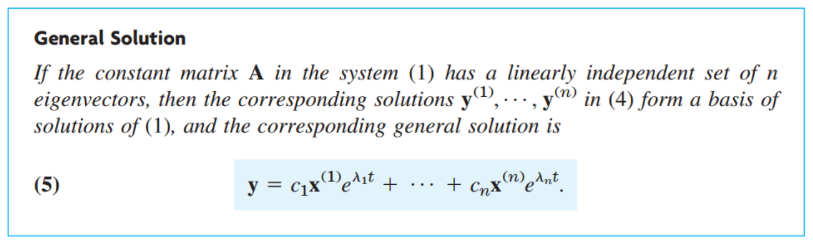

[Engineering Mathematics] Ch 4. Systems of ODE, Phase plane - part1
항상 지금 어디서 무엇을 하고있는거지? 감을 잡고 시작해보자.
지금까지, nth order ODE까지 푸는 방법을 살펴보았다.
그런데, 우리는 Nth order ODE 전부다 풀지는 못하고,
[Ch 3]
1. Homogeneous Linear ODE
with constant coefficient
2. Non-Homogeneous Linear ODE
with constant coefficient
- Method of Undetermined Coefficients
-Method of Variation of Parameters
즉, 특정 한 nth order ODE 만 풀수 있었다.
이번 단원에서는 새롭게 행렬 Matrix를 도입하여 Genearl Nth order ODE를 풀어보자
기본적인 원리는 Nth order ODE -> N개의 1st order ODE
사실 이게 4단원의 핵심이다. N개로 나누고 행렬로 표현하여 해를 구한는것.
LET's get started
행렬의 기본적인 연산법과 개념들은 넘어가도록 하고,
한가지만 짚고 가보자.
Eigenvalues, Eigenvectors
(다음과 같이, A는 행렬이고 , lambda 는 상수를 만족하는 lambda 는 eigen value라고 정의한다)
![[Engineering Mathematics] Ch 4. Systems of ODE, Phase plane - part1](./images/img-001.png)
[사고정리]
생각해보면 이렇다, 그니까, A라는 행렬이 존재한다고 해보자.
이 A행렬에 어떤 특정한 백터(x)를 곱했을때, 결과 백터가 (x) 와 같은 방향이라면????
완전 특이한 경우이다. 일단 특이한건 사실이다. 그럼어디 쓰일까?는 조금있따 알아보자.
일단 그런 특정한 백터를 (Eigen vector), 곱했을때,
결과백터 = lambda x 라고 했을때, 그 계수 lambda 를 (Eigenvalue) 라 정의
식(12) 의 우항을 좌항으로 넘기면,
![[Engineering Mathematics] Ch 4. Systems of ODE, Phase plane - part1](./images/img-002.png)
이 식이 성립하기 위해서는 A-
λI = 0 이어야 한다.
선형대수학에서 배웠듯이, 이말이 즉, Determinant of (A- λI) = 0
A = 2x2인 경우를 살펴보자.
![[Engineering Mathematics] Ch 4. Systems of ODE, Phase plane - part1](./images/img-003.png)
![[Engineering Mathematics] Ch 4. Systems of ODE, Phase plane - part1](./images/img-004.png)
![[Engineering Mathematics] Ch 4. Systems of ODE, Phase plane - part1](./images/img-005.jpg)
지금 까지 사실 개념이었고,
이제 Nth order ode -> N 개의 1st order ODE의 행렬로 바꿔보자.
![[Engineering Mathematics] Ch 4. Systems of ODE, Phase plane - part1](./images/img-006.png)
사실 원리는 그냥 하나씩 전부 치환하는 것이다. 2차 미분이상이 생기지 않도록 하려고.
이번에도 Linear system을 살펴보자.
![[Engineering Mathematics] Ch 4. Systems of ODE, Phase plane - part1](./images/img-007.png)
이제 이 방정식들을 행렬로 전환하면, 다음과 같이 표현할 수 있다.
![[Engineering Mathematics] Ch 4. Systems of ODE, Phase plane - part1](./images/img-008.png)
마찬가지로, g = 0 이라면, y'=Ay 즉 Homogeneous Linear system이라고 부른다.
우리가 지금 까지 배웠던 것처럼, Linearity, supoerposition principle모두 그대로 적용된다.
여기서부터, 헷갈리지 않게 잘 따라와야 된다.
Nth order Homogeneous Linear ODE의 경우,
해의 갯수는 n개이고, superposition원리로
General Solution, y = c1y1+c2y2+ c3y3 + ...cnyn 이었다.
똑같이 행렬식에 적용해보자.
![[Engineering Mathematics] Ch 4. Systems of ODE, Phase plane - part1](./images/img-009.png)
![[Engineering Mathematics] Ch 4. Systems of ODE, Phase plane - part1](./images/img-010.png)
여기서, 해라는 것은 y column matrix 1개를 말한다. 즉, y1,y2,...yn 세트가 한개의 해라는 것이다.
이 해가 총 N개 존재한다는 것이다.
따라서, 다음과 같이 General Solution을 정의할 수 있다. 헷갈리지 말아야할 부분은,
y(1) -> 하나의 column matrix(세트)라는 것.
![[Engineering Mathematics] Ch 4. Systems of ODE, Phase plane - part1](./images/img-011.png)
여기서, 마찬가지로, Linearly independent인지 아닌지 확인하기 위해,
Wronskian을 사용하는데, 행렬의 형태로 사용한다.
먼저 위 해들을 모두 합친 nxn행렬을 정의하고 (Y)
![[Engineering Mathematics] Ch 4. Systems of ODE, Phase plane - part1](./images/img-012.png)
이 행렬의 Determinant 를 Wronskian 이라 정의한다.
![[Engineering Mathematics] Ch 4. Systems of ODE, Phase plane - part1](./images/img-013.png)
즉 위 행렬의 Determinant 가 0 이 아니라면, 모든 column 이 linearly indepnedent하다는 의미,(선형대수학)
핵심만 말하자면, nxn행렬로 모든 해들을 합쳐서 만들고,
그 행렬의 Determinant가 0 이라면, 결국, linearly dependent한 해가 있다는 사실
만약에 0 이 아니라면, Linearly independent하므로 모든 해가 basis of genearl solution이라는 뜻.
Constant- coefficient system인 경우 상당히 문제가 쉬워진다.
[y = y(t) t에 관한 함수]
밑에서 모든 a(t) = a (t independent), 모든 g(t) = 0
따라서, 행렬로 표현하면
![[Engineering Mathematics] Ch 4. Systems of ODE, Phase plane - part1](./images/img-014.png)
이제 이 행렬의 해를 구하느 것은 어김 없이 e^T 로 표현하고 시작.
![[Engineering Mathematics] Ch 4. Systems of ODE, Phase plane - part1](./images/img-015.png)
아까 우리가 배운, Engien value, vector문제로 바뀌게 된다.
따라서, 여기서 Eigen value가 해를 결정하고, eigenvector은 그 해들이 서로 linearly independent하게 만들어준다.
결국, Genearl soltuion은 각해들이 linearly independent하므로,

이제 수학자들은 이렇게 도출된 해 를 그래프에 표현하고 싶어한다.( 시각화하려고)
다음과 같이 해가 두개의 row로 구성이라 하자.
![[Engineering Mathematics] Ch 4. Systems of ODE, Phase plane - part1](./images/img-017.png)
여기서 y1,y2 모두 결국 시간에 따른 함수이다.
시간에 따라서, y1,y2가 바뀌고, 결국 백터 y 의 방향이 바뀌게 될 것이다.
y1 -> x축, y2-> y축으로 하는 평면을 : Phase plane
그 평면 안에서 시간에 따른 y의 백터 방향을 추적 한 선이 : Trajectory
Phase plane에서 Trajectory를 합쳐서 그리면: Phase portrait 라고 한다.
사실 이렇게 책을 읽었을때 감이 전혀 안왔다. 예제문제를 살펴보면서 이해해보자.
![[Engineering Mathematics] Ch 4. Systems of ODE, Phase plane - part1](./images/img-018.png)
위의 방법대로, Eigen vector, value를 통해 genearl solution을 구하면,
![[Engineering Mathematics] Ch 4. Systems of ODE, Phase plane - part1](./images/img-019.png)
[y1,y2] 백터의 크기는 시간이 지남에 따라 0 에 가까워지고,
방향은 [1,-1]이 더빨리 감소함을 알 수 있다.
따라서, [1,1]이 시간에 지남에 따라 방향이 우세함을 알 수 있다.
![[Engineering Mathematics] Ch 4. Systems of ODE, Phase plane - part1](./images/img-020.png)
여기서 (0,0)에 주목할 필요가 있다. 이 점에서 두 Basis(y(1)t, y(2)t)는 유일하게 만나고,
모든 백터가 시간이 지남에 따라 모이는 점이다.
이렇게 모이는 점의 특징은,
그 점에서 dy2/dy1즉, 위 평면의 기울기가 한개가 아니라는 말이다(Not Unique)
이렇게,
기울기가 unique하지 않은 점을 Critical Point라 정의한다.
(책에서는 기울기가 Undetermined 라고 언급)
![[Engineering Mathematics] Ch 4. Systems of ODE, Phase plane - part1](./images/img-021.png)
Critical point에는 사실 종류가 5가지 있다. (그래프의 모양에 따라)
1. Improper nodes, 2. Proper nodes, 3. Saddle Points, 4. Centers, 5. Spiral points
Example로 하나씩 살펴보자.
1. Improper nodes
(Basis 제외) 모든 백터들의 direction이 critical point에서 같은 경우.
위 경우에, y(2)(t) 를 제외하고는 기울기가 1, 백터로 표시하면 [1,1] 임을 알 수 있다.
물론, Basis 중 하나, y(1) (t) 도 같은 방향이지만, 정의에 따르면, basis 빼고 다른 백터가 모두
같은지 다른지만 확인하면 Improper Node
2. Proper nodes
정의는, Improper과 반대로, Critical point에서 백터들의 기울기의 종류가 2개 이상인 경우.
![[Engineering Mathematics] Ch 4. Systems of ODE, Phase plane - part1](./images/img-022.png)
그래프를 보면 한순간에 이해가 되실 것이다.
3. Saddle point
Basis 빼고는 전부 critical point를 우회하는 경우.
![[Engineering Mathematics] Ch 4. Systems of ODE, Phase plane - part1](./images/img-023.png)
4. Center
모든 Trajectory가 critical point를 둘러싼 경우.
![[Engineering Mathematics] Ch 4. Systems of ODE, Phase plane - part1](./images/img-024.png)
5. Spiral
시간이 지남에 따라 모든 trajectory가 critical point로 gather하는 경우.
![[Engineering Mathematics] Ch 4. Systems of ODE, Phase plane - part1](./images/img-025.png)